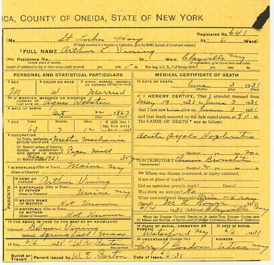

Marriage Data

Census Data
| 1900 | 1910 | 1920 | 1930 | 1940 | |
| Arthur L. Vining | ? | 34 | 51 | ? [see note below] |
dead |
| Agnes J. “Addie” (Webster) Vining | ? | 35 | 44 | 48 | ? |
| Walter L. Vining | 9 | 18 | 22 | 34 | |
| Delmar T. Vining | 3 | 12 | 21 | ? |


Death Data
Death certificate for Arthur L. Vining: